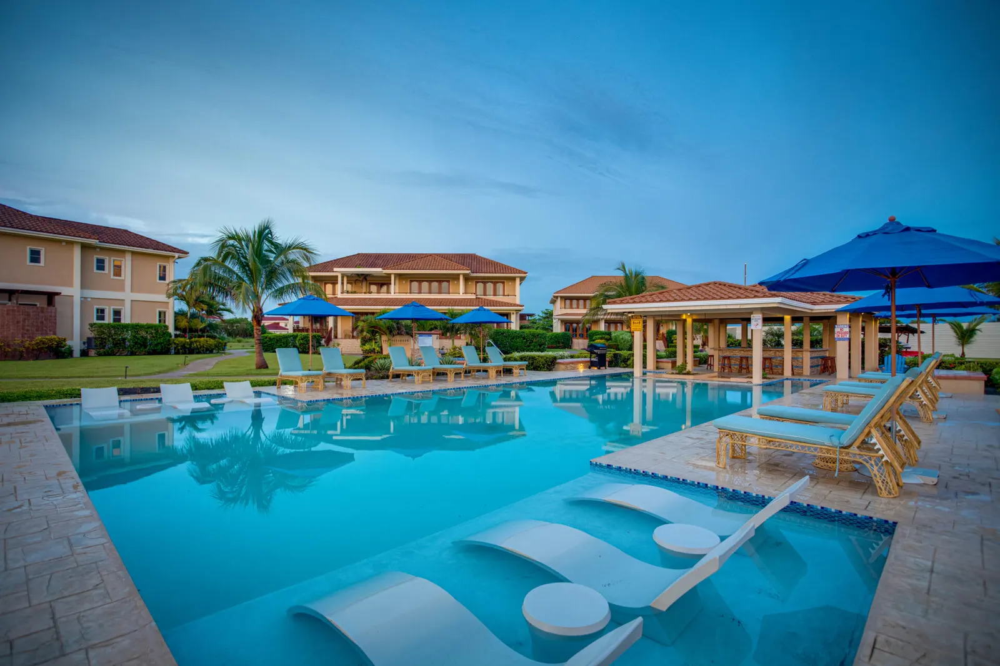
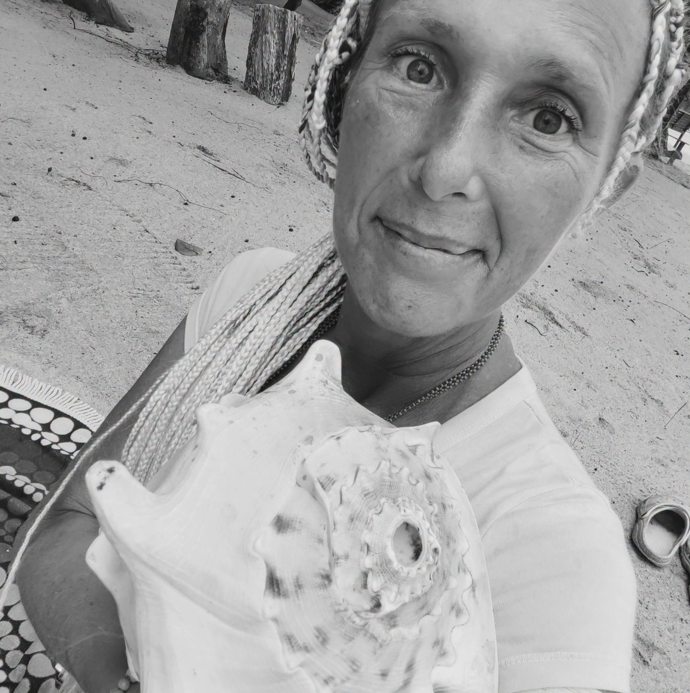

01 · Comfort
From the comfort of home.
In your own space, with your favourite cup of tea and without the extra travel. All you need is an agreed time and a quiet corner for yourself.
Choose a date to explore its place in the traditional 260-day Maya calendar.


Let the rhythm of this day offer a moment to pause, notice what is moving through your life and choose how you wish to meet the experience ahead.
You do not have to wait for a holiday, the perfect moment or a plane ticket. BLINKITA can become part of your everyday life today, from the comfort of home and at a time that works for you.
Sometimes you find yourself moving in the same circle. You can feel that something is no longer right, yet you do not know what to change, where to begin or how to take the first step.
That is exactly when an online experience can be the simplest beginning. You do not need to organise a trip, take time off or wait for everything around you to fall into place. You can begin right where you are.
Through a personal session, a reading, a guided experience or a selected programme, you can begin exploring what is happening, what needs your attention and which next step makes sense for you. Sometimes clarity comes to your thoughts first, then to your decisions. In time, plans and practical possibilities can take shape too, including the possibility of travelling to Belize in person.
Online experiences do not promise miraculous financial solutions. They can, however, offer space for a clearer perspective, more conscious decisions and a plan you can begin putting into practice in your own life.
A digital connection is not a substitute for every in-person experience. It is, however, a wonderful way for us to meet, wherever you happen to live.
In your own space, with your favourite cup of tea and without the extra travel. All you need is an agreed time and a quiet corner for yourself.

You can schedule an experience at a time that fits your everyday life. There is no need to wait for a holiday or coordinate an entire trip.

You can begin before you ever arrive in Belize. And when your holiday ends and you return home, your exploration can continue online.
They are two complementary ways to experience BLINKITA. You do not have to choose only one, and you do not need to know today where the journey will lead.
If you are not sure how you could make it to Belize just yet, you can begin with an online experience. First, explore what is calling you, ask your questions and shape your next steps. A financial plan for visiting Belize can take shape gradually too.
Explore the online catalogue ↗
When travel becomes possible, you can choose a retreat, a personal programme, a bodywork experience, an ocean ritual or one of BLINKITA’s journeys through the Maya world. Some experiences are available only in person.
Explore BLINKITA in Belize ↗
BLINKITA is not one single method or programme. It brings together different paths of exploration, personal insight, body wellbeing, Living Time, creativity and inner transformation.
Some of these experiences can take place online or remotely. Others require a personal meeting, touch, shared space or physical presence in Belize. This page is not a promise that everything can happen through a screen. It is an invitation to find the format that fits the experience you are drawn to.
Explore the full Wellness catalogue ↗On selected dates, you can also join online ceremonies and special gatherings broadcast live from the boutique resort Seiri del Mar in Hopkins, Belize.
Live online gatherings take place on announced or agreed dates. They are not available continuously; details and joining instructions are provided when you register.
I am interested in joining live
BLINKITA is not an experience that has to end with one session or one journey. Different paths can connect and unfold over time.
You choose a first session, reading or programme available remotely.
You explore what matters, shape your next steps and create your plan.
When the time is right, you can join a retreat, a journey or an in-person experience.
After returning home, you can continue with online experiences and new explorations.
When you experience one offering, you may find yourself wanting to explore more. And as you experience more, you begin to discover how everything is connected.
And then you are no longer asking only which experience to choose. You begin exploring an entire world that has opened before you. Each experience has its own language, depth and place in a wider story.
Tell me what interests you, what you are exploring or which experience you would like to have. I will explain which options are available online and which require an in-person meeting.